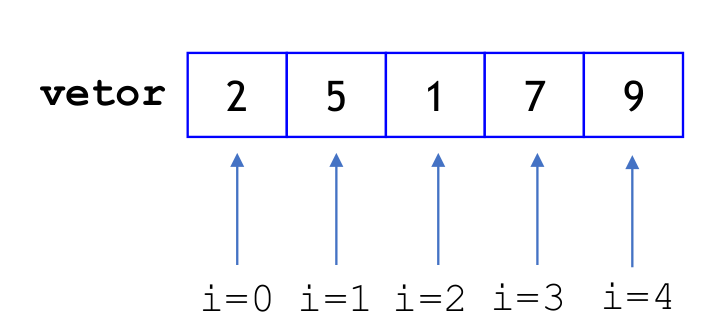
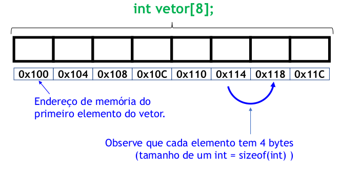

MCTA028-15 - PROGRAMAÇÃO ESTRUTURADA
UFABC
2026-09-25
Usadas para modularizar o códgio;
Uma função:
Sintaxe de como definir funções:
Um procedimento é uma função que não retorna um valor
Usamos o tipo void para indicar isso
Definimos as funções antes de suas chamadas
Alternativamente, podemos só declarar o protótipo da função antes dela ser chamada
Código pode então ser declarado depois da função ser chamada
O protótipo contem o tipo de retorno, o nome da função, e os tipos dos argumentos
Em C, todo parâmetro de função é passado por valor
Passagem por referência vai ser feita via ponteiros
a = 1, b = 2O escopo de uma variável determina de onde ela pode ser acessada
Em C, existem dois escopos pincipais:
#include <stdio.h>
double resultado; // Variável global
void calcula_quadrado(double num) {
resultado = num * num;
}
double calcula_soma(double n1, double n2) {
return n1 + n2;
}
int main() {
int a = 2, b = 3; // Variáveis locais da main()
resultado = calcula_soma(a, b);
printf("%.2f\n", resultado);
calcula_quadrado(resultado);
printf("%.2f\n", resultado);
calcula_quadrado(resultado);
printf("%.2f\n", resultado);
return 0;
} #include <stdio.h>
float resultado; // Variável global
void calcula_quadrado(double num) {
resultado = num * num;
}
double calcula_soma(double n1, double n2) {
return n1 + n2;
}
int main() {
int a = 2, b = 3; // Variáveis locais da main()
resultado = calcula_soma(a, b);
printf("%.2f\n", resultado); // 5.00
calcula_quadrado(resultado);
printf("%.2f\n", resultado); // 25.00
calcula_quadrado(resultado);
printf("%.2f\n", resultado); // 625.00
return 0;
} Variáveis globais deixam o código de mais difícil leitura
Não sabemos quando seu valor pode mudar
Usar algum padrão de nomeação para variáveis globais (por exemplo, nomes começando com g_) é um modo de mitigar alguns dos problemas das variáveis globais.
Escopo também vale para blocos de código: variável declarada dentro de um bloco de código só existe dentro daquele mesmo bloco.
Um vetor é um conjunto de variáveis do mesmo tipo.
Exemplo: queremos ler a idade de 10 pessoas e contar quantas estão acima da média.
A sintaxe geral para declarar um vetor é:
Em C, os índices de um vetor começam em 0.
Esse vetor possui 5 posições válidas:
A posição vetor[5] não existe

A expressão vetor[i] acessa o elemento na posição i.
int vetor[5];
vetor[4]; // acessa o elemento de índice 4
vetor[3] = 7; // atribui valor ao elemento de índice 3
if (vetor[3] == 8) {
return 0;
}O compilador geralmente não impede que você escreva um índice inválido. O programa pode compilar, mas ter comportamento imprevisível durante a execução.
Podemos usar um laço para ler vários elementos.
Por que usamos &idade[i]?
idade[i] é o elemento do vetor.&idade[i] é o endereço desse elemento.scanf precisa receber o endereço da variável onde deve guardar o valor.Trate idade[i] da mesma forma que você trataria uma variável
O padrão mais comum é usar um laço for.
Queremos:
Precisamos guardar as idades porque vamos percorrer os valores mais de uma vez.
#include <stdio.h>
int main() {
int idade[10];
int i, soma = 0;
for (i = 0; i < 10; i++) {
scanf("%d", &idade[i]);
soma += idade[i];
}
double media = soma / 10.0;
int qtd_acima_media = 0;
for (i = 0; i < 10; i++) {
if (idade[i] > media) {
qtd_acima_media++;
}
}
printf("Ha %d pessoa(s) acima da media.\n", qtd_acima_media);
return 0;
}Declara um vetor com 10 elementos.
Este vetor possui índices válidos de 0 a 9:
O acesso idade[10] está fora dos limites do vetor.
Em C, isso pode causar comportamento indefinido:
segmentation fault);Vetores são armazenados em posições consecutivas na memória.
Se sizeof(int) == 4, então int vetor[8] ocupa:

sizeofO operador sizeof retorna quantos bytes um tipo ou expressão ocupa.
int main() {
int a; long int b; long long int c;
float d; double e; char f;
printf("%zu %zu %zu %zu %zu %zu\n",
sizeof(a), sizeof(b),sizeof(c), sizeof(d),
sizeof(e), sizeof(f));
return 0;
}sizeof retorna um valor do tipo size_t, impresso usando %zu. Em Linux x86 ele é definido como unsigned long int pelo gcc, mas pode mudar dependendo da plataforma.
Alguns padrões que aparecem o tempo todo:
Como imprimir o mesmo vetor na ordem inversa?
whilePara inserir no início, precisamos deslocar os elementos para a direita.
Na versão anterior, sempre deslocamos até a última posição.
Mas, no início, nem todas as posições do vetor já foram preenchidas.
E se quisermos trabalhar com um vetor de 10 elementos?
Na versão atual, o valor 5 aparece várias vezes:
Esse valor está hardcoded no código.
Uma opção simples é usar uma constante simbólica.
Queremos verificar se um número aparece no vetor.
Depois de encontrar o elemento, não precisamos continuar percorrendo o vetor.
void muda_valor(int parametro) {
parametro = 507;
printf("%d\n", parametro);
}
int main() {
int n = 1000;
muda_valor(n);
printf("%d\n", n);
return 0;
}Qual é a saída?
A função recebe uma cópia do valor de n.
Alterar parametro não altera n.
#include <stdio.h>
void muda_valor(int vetor[]) {
vetor[0] = 90;
printf("%d\n", vetor[0]);
}
int main() {
int v[3] = {200, 500, 300};
muda_valor(v);
printf("%d %d %d\n", v[0], v[1], v[2]);
return 0;
}Qual é a saída?
O identificador de uma variável comum representa o valor da variável.
matricula acessa o valor.&matricula acessa o endereço.Já o identificador de um vetor representa o endereço do primeiro elemento.
Essas duas expressões imprimem o mesmo endereço.
Quando passamos vetor para uma função, estamos passando uma cópia do endereço de onde esse vetor está armazeado.
vetor é (essencialmente) ponteiro para um espaço da memóriaCriar uma função que troca todos os números primos de um vetor pelo número -1.
Exemplo:
int v[n] não é alocação estáticaEm C, é possível escrever:
Isso é um VLA (variable-length array): um vetor cujo tamanho é decidido durante a execução.
Mas ele tem armazenamento automático, não estático:
Alocação estática seria algo como int v[100]; ou uma variável global, com o tamanho conhecido em tempo de compilação.
Embora VLAs sejam aceitos pelo GCC, eles têm limitações importantes:
O suporte a VLAs não é igualmente forte em todos os compiladores/padrões de C.
O tamanho pode vir da entrada do usuário e ser grande demais.
Não há uma forma simples de verificar se a alocação falhou.
Por isso, nesta disciplina, vamos preferir: int v[MAX]; quando houver um limite fixo, e alocação dinâmica manual no futuro.
Implemente os algoritmos de inserção vistos nesta aula em forma de função.
Implemente uma função para remover o elemento de índice i de um vetor.
i.